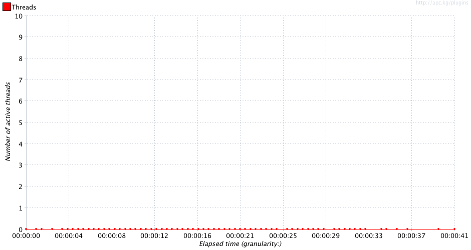
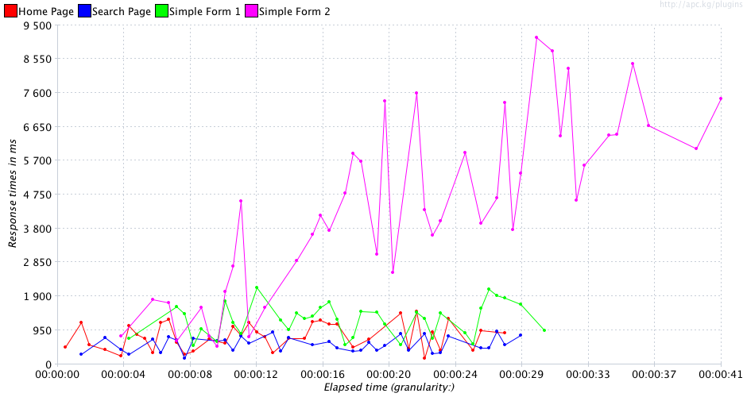
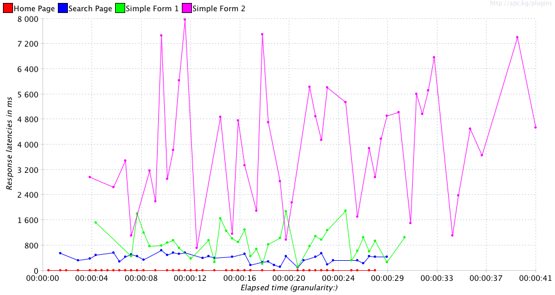
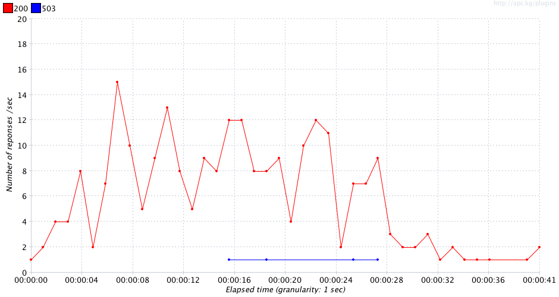
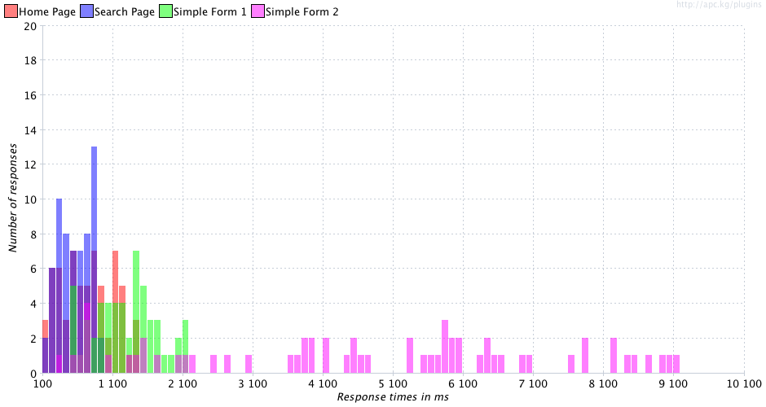
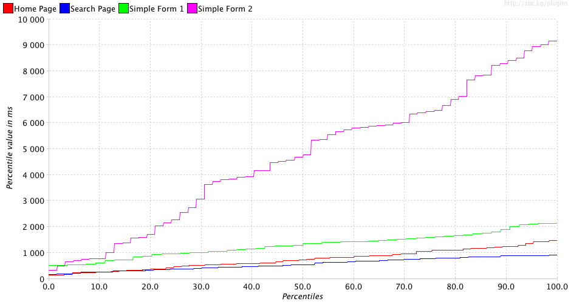

sample_nominal_20130317_223657.jtlResult Table:
| Page | Requests | AVG | Median | Std Deviation | % Deviation | Minimum | 90% | Maximum | Throughput | % error | % < 500ms | % < 2s | % < 4s | % < 6s | % < 8s |
|---|---|---|---|---|---|---|---|---|---|---|---|---|---|---|---|
| Home Page | 65 | 755 | 749 | 365.01 | 24.5 | 153 | 1228 | 1490 | 2.29 | 0.0 | 27.60 | 99.9 | 99.9 | 99.9 | 99.9 |
| Search Page | 63 | 576 | 548 | 223.27 | 24.3 | 174 | 890 | 919 | 2.29 | 0.0 | 41.2 | 99.9 | 99.9 | 99.9 | 99.9 |
| Simple Form 2 | 62 | 4689 | 4692 | 2573.33 | 28.1 | 339 | 8292 | 9157 | 1.61 | 0.0 | 1.60 | 20.90 | 40.30 | 67.70 | 87.00 |
| Simple Form 1 | 54 | 1297 | 1297 | 447.79 | 20.91 | 522 | 1917 | 2141 | 2.02 | 7.41 | 0.00 | 90.7 | 99.9 | 99.9 | 99.9 |
| TOTAL | 244 | 1828 | 904 | 2151.69 | 23.5 | 153 | 5825 | 9157 | 5.84 | 1.64 | 17.60 | 77.85 | 85.00 | 91.85 | 96.68 |






Issues:
| Issue | Label | Item | Expected | Real |
|---|---|---|---|---|
| 1 | Home Page | Under 0.5s | 30 | 27.6 |
| 2 | Simple Form 2 | Average | 1000 | 4689 |
| 3 | Simple Form 2 | Median | 1000 | 4692 |
| 4 | Simple Form 2 | Std. Deviation | 1000 | 2573.33 |
| 5 | Simple Form 2 | % Deviation | 25 | 28.1 |
| 6 | Simple Form 2 | 90% Line | 2000 | 8292 |
| 7 | Simple Form 2 | Max Time | 2100 | 9157 |
| 8 | Simple Form 2 | Under 0.5s | 30 | 1.6 |
| 9 | Simple Form 2 | Under 2s | 90 | 20.9 |
| 10 | Simple Form 2 | Under 4s | 95 | 40.3 |
| 11 | Simple Form 2 | Under 6s | 97 | 67.7 |
| 12 | Simple Form 2 | Under 8s | 99 | 87.0 |
| 13 | Simple Form 1 | Average | 1000 | 1297 |
| 14 | Simple Form 1 | Median | 1000 | 1297 |
| 15 | Simple Form 1 | Min Time | 400 | 522 |
| 16 | Simple Form 1 | Max Time | 2100 | 2141 |
| 17 | Simple Form 1 | % Error | 1 | 7.41 |
| 18 | Simple Form 1 | Under 0.5s | 30 | 0 |
| 19 | TOTAL | Average | 1000 | 1828 |
| 20 | TOTAL | Std. Deviation | 1000 | 2151.69 |
| 21 | TOTAL | 90% Line | 2000 | 5825 |
| 22 | TOTAL | Max Time | 2100 | 9157 |
| 23 | TOTAL | % Error | 1 | 1.64 |
| 24 | TOTAL | Under 0.5s | 30 | 17.6 |
| 25 | TOTAL | Under 2s | 90 | 77.85000000000001 |
| 26 | TOTAL | Under 4s | 95 | 85.00000000000001 |
| 27 | TOTAL | Under 6s | 97 | 91.85000000000001 |
| 28 | TOTAL | Under 8s | 99 | 96.67500000000001 |